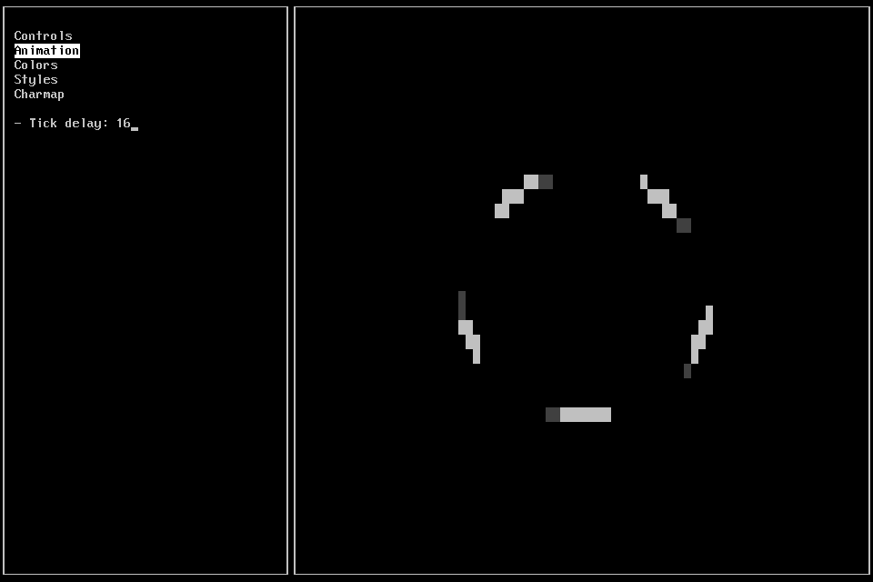
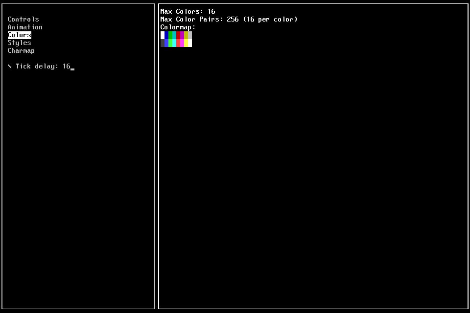
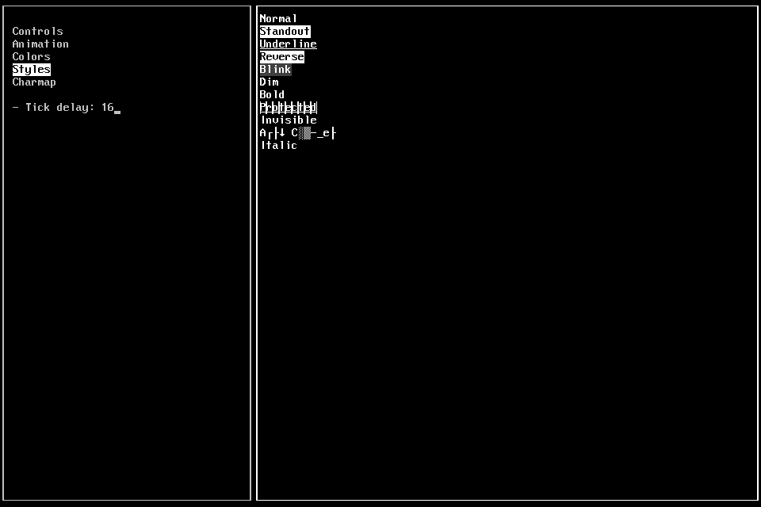
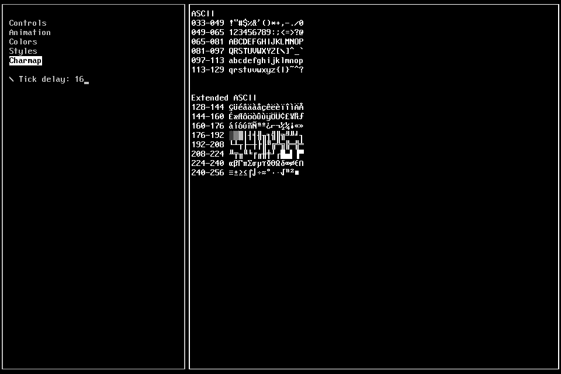

Hugues Ross
Hugues RossLet's Make a Roguelike - 2 - Curses 101
Getting Started
In the previous part, we looked at the tools and libraries that we'll be using in this series. Now that that's done, the next step is to take a closer look at the curses API. I think learning by doing is a pretty good policy, so we're going to start off by writing some code!
'Hello, World!'
I consider myself a bit of a traditionalist, which you've probably guessed given that I'm using C for personal projects in this day and age. As such, I love good Hello World to start off any new language or library. So, let's make that happen.
The two most basic functions to know in curses are initscr() and endwin(). These two functions initialize and clean up curses, respectively. (Technically they do more than that, but from my experience you'll pretty much only ever use them to begin and end your application) You should always call initscr() before any other curses functions, and endwin() when you're done. Between these two functions, you can call printw() to print text. printw() takes the same arguments as C's printf(), and is the curses equivalent. Using these 3 functions, you can make a simple program that looks a lot like this:
1 #include <curses.h> // Depending on your system, you may need to change this line to include your version of PDCurses 2 3 int main() { 4 initscr(); 5 printw("Hello, World!"); 6 endwin(); 7 8 return 0; 9 }
If you try to run this program, you'll notice that it opens and closes immediately. We need to make our program pause so that we can see the results of our work, preferably until the user presses a button. Thankfully curses makes this easy for us, with the getch() function. getch() waits for the user to provide input, and returns it as an int. After adding a single getch() after printing out your message, your window should stay open until you press a key.
Before we wrap up this little example program, let's prompt the user for input. If we simply add a second printw(), the result will end up on the same line as our original message. We could add the second line to our original print statement with a \n, but let's do things the proper way. Because curses is designed to allow any part of the terminal (or window, in our case) to be drawn to, we can move the cursor elsewhere to draw our second message wherever we want. The move() function takes in the line and column as ints, and sets the cursor's position accordingly. (Quick reminder: This means that the y position is passed in first) This time, we just want to go a line or two down so we can pass in something like 1, 0 or 2, 0 as our arguments.
1 #include <curses.h> 2 3 int main() { 4 // Initialize curses 5 initscr(); 6 7 printw("Hello, World!"); 8 move(1, 0); 9 printw("Press any key to continue..."); 10 11 // Pause the program until we press a key 12 getch(); 13 14 // Clean up 15 endwin(); 16 17 return 0; 18 }
...And there you have it! You've now written your first curses program.
Note - On the subject of prefixes
Curses provides some shortcuts to make your life easier by adding prefixes to functions. Most output functions support adding an 'mv' to the start of their name, which allows you to specify the position of the output. For instance, our "Press any key to continue" up above could be written as9 mvprintw(1, 0, "Press any key to continue...");...in order to save space.
The other main prefix is 'w', which allows you to specify which curses window to draw to. I'll be covering that in a later chapter, so don't worry about it for now. Lastly, you can also use 'mvw' to specify the position and the window at the same time.
The Example App
Next, I'll show off some of the other features in curses using a simple example that I've put together. This example has a few demos showing off different features in curses. You can find the code for this program here, and there's also a Windows executable version here for those who don't want to compile it. Let's go over the demos and how they work:
Animation
In my previous attempt at this tutorial series, I incorrectly stated that you couldn't do high-speed motion or animation in curses. However, this isn't quite true. On most normal terminals, drawing ncurses graphics at a high refresh rate results in an awful flicker, as well as some lag (depending on your system). However, PDCurses doesn't seem to have this issue and can handle rapidly-changing output rather well!
To demonstrate this in action, I've made a simple spinning animation that's tied to a user-controlled refresh rate (labelled "tick delay" on the interface). Curses only offers getch to handle single-character input, but there's a trick that we can use to do that while simultaneously updating the application. By calling the nodelay() function, we can make getch not wait for input, instead providing -1 if no buttons were pressed.
Colors
The colors demo shows you the number of available colors, and draws the defaults. As I mentioned in the last part, the SDL version of PDCurses is limited to 16 colors. However, the ability to change colors at any time (Not to mention the fact that most roguelikes don't use many colors) makes this limitation less of an obstacle than you might expect. I'll be covering color in greater detail at a later point, because the subject is a little too complex to do justice to here.
You should also take note of the color pair counter. Curses handles colors in pairs (one for the foreground and one for the background), and the version that we're using supports just enough pairs to cover every permutation of our allotted 16 colors. The default 16 colors provide light and dark versions of the following 8 "standard" colors: White (with black as the dark variant), Blue, Green, Cyan, Red, Magenta, Yellow, and Gray.
Styles
For this demo, I took every available curses text attribute and rendered text with it. To turn an attribute on/off for drawing, you simply have to use the attron/attroff functions. The functions take an enum value as an argument, which represents the particular attribute that you want to use. Of the 11 attributes that I tried, the following worked as advertised in this implementation (with their enum values):
- Normal [A_NORMAL]
- Standout [A_STANDOUT] - Makes the text stand out in whatever way is deemed appropriate. Here, it highlights the text.
- Underline [A_UNDERLINE] - Does what it says on the tin.
- Reverse [A_REVERSE] - Inverts the colors
- Alternate Charset [A_ALTCHARSET] - Replaces normal text with extended ASCII. This isn't typically used, but I guess it works.
Of the ones that didn't work out, a couple of them had interesting results:
- Blink [A_BLINK] - Instead of making the text blink, it gave it a gray background. This is odd, but not an issue. If blinking is necessary, we can still do it ourselves via animation.
- Protected [A_PROTECT] - Some research tells me that this supposed to protect text from being deleted by certain functions. I don't know if that works, but I do know that it makes a weird grid pattern on your text for some reason.
Bear in mind that if you're using a different version of PDCurses (or NCurses), your results on this demo (and the color demo) will likely be quite different. This demonstrates why I'm using this particular flavor of curses: This is the only variant that supports all platforms while providing the same exact feature set for each. Some other versions will provide more support, but then you'll have to carefully manage when to use what. For a basic-level tutorial like this one, juggling features across platforms and environments is way out of scope.
Charmap
The last demo is just a simple character map. It doesn't do anything fancy, but it might be useful to use the code to test a custom font.
Wrapping Up
I hope you appreciated dipping your toe into curses, while also seeing what's possible with some more advanced features. Next time, we'll start our game proper by creating a character and putting them in a level. This also means no Next Steps section this time around. Take a break!